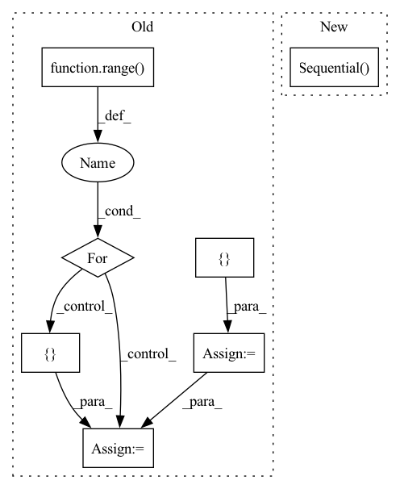

Pattern ID :1920

Before Change
self.conv1 = nn.Sequential(nn.ReflectionPad2d(1), nn.Conv2d(in_channels, num_init_features, 3), nn.ReLU())
basic_block_layer = []
for _ in range(n_basic_block):
basic_block_layer += [ResidualInResidualDenseBlock(num_init_features, growth_rate)]
self.basic_block = nn.Sequential(*basic_block_layer)
After Change
rrdb_layers = []
for _ in range(23):
rrdb_layers += [ResidualInResidualDenseBlock(64, 32)]
self.residual_residual_dense_blocks = nn.Sequential(*rrdb_layers)
// Second conv layer post residual blocks
self.conv2 = nn.Conv2d(64, 64, kernel_size=3, stride=1, padding=1, bias=False)
In pattern: SUPERPATTERN
Frequency: 3
Non-data size: 7
Instances
Fragment ID: 8589395
Project Name: lornatang/esrgan-pytorch
Commit Name: 8ef58f0f8458d618a99fffa07433927c9b9ef70f
Time: 2020-10-12
Author: liuchangyu1111@gmail.com
File Name: esrgan_pytorch/model.py
M Class Name: Generator
N Class Name: Generator
M Method Name: __init__(2)
N Method Name: __init__(7)
M Parent Class: nn.Module
N Parent Class: nn.Module
M File Name: esrgan_pytorch/model.py
N File Name: esrgan_pytorch/model.py
M Start Line: 99
M End Line: 125
N Start Line: 181
N End Line: 210
'>
Before Change
self._d_model, self._embed_dim, self._n_mlp_layers + 1
)
fc_sizes = np.ceil(fc_sizes).astype(int)
fc_layers = []
for idx in range(len(fc_sizes) - 1):
fc_layers.append(torch.nn.Linear(fc_sizes[idx], fc_sizes[idx + 1]))
if idx < len(fc_sizes) - 2:
fc_layers += [
torch.nn.Dropout(p=self._dropout),
torch.nn.ReLU(),
]
else:
fc_layers.append(torch.nn.Softplus())
After Change
// else:
// self.head = torch.nn.Softplus()
self.dot = torch.nn.Sequential(
MLP(2 * self._embed_dim, 1, self._n_mlp_layers, self._dropout),
torch.nn.Sigmoid(),
)
// The optimizer and loss:
self.mse = torch.nn.MSELoss()
self.optimizer = torch.optim.Adam(self.parameters(), **kwargs)
'>
Fragment ID: 8589396
Project Name: wfondrie/depthcharge
Commit Name: ccf3d34d18f907802f0e4f3daab0845045df0390
Time: 2021-07-09
Author: fondriew@gmail.com
File Name: depthcharge/embedder/model.py
M Class Name: SpectrumTransformer
N Class Name: SpectrumTransformer
M Method Name: __init__(19)
N Method Name: __init__(19)
M Parent Class: torch.nn.Module
N Parent Class: torch.nn.Module
M File Name: depthcharge/embedder/model.py
N File Name: depthcharge/embedder/model.py
M Start Line: 88
M End Line: 163
N Start Line: 88
N End Line: 153
'>
Before Change
super(Discriminator, self).__init__()
block = []
// Define the initial number of channels
in_channels = 3
out_channels = 64
for _ in range(num_conv_block):
block += [nn.ReflectionPad2d(1),
nn.Conv2d(in_channels, out_channels, 3),
nn.LeakyReLU(),
nn.BatchNorm2d(out_channels)]
in_channels = out_channels
block += [nn.ReflectionPad2d(1),
nn.Conv2d(in_channels, out_channels, 3, 2),
nn.LeakyReLU()]
out_channels *= 2
out_channels //= 2
After Change
def __init__(self):
super(Discriminator, self).__init__()
self.features = nn.Sequential(
// Conv0
nn.Conv2d(3, 64, kernel_size=3, stride=1, padding=1, bias=False),
nn.LeakyReLU(negative_slope=0.2, inplace=True),
nn.Conv2d(64, 64, kernel_size=4, stride=2, padding=1, bias=False),
nn.BatchNorm2d(64),
nn.LeakyReLU(negative_slope=0.2, inplace=True),
// Conv1
nn.Conv2d(64, 128, kernel_size=3, stride=1, padding=1, bias=False),
nn.BatchNorm2d(128),
nn.LeakyReLU(negative_slope=0.2, inplace=True),
nn.Conv2d(128, 128, kernel_size=4, stride=2, padding=1, bias=False),
nn.BatchNorm2d(128),
nn.LeakyReLU(negative_slope=0.2, inplace=True),
// Conv2
nn.Conv2d(128, 256, kernel_size=3, stride=1, padding=1, bias=False),
nn.BatchNorm2d(256),
nn.LeakyReLU(negative_slope=0.2, inplace=True),
nn.Conv2d(256, 256, kernel_size=4, stride=2, padding=1, bias=False),
nn.BatchNorm2d(256),
nn.LeakyReLU(negative_slope=0.2, inplace=True),
// Conv3
nn.Conv2d(256, 512, kernel_size=3, stride=1, padding=1, bias=False),
nn.BatchNorm2d(512),
nn.LeakyReLU(negative_slope=0.2, inplace=True),
nn.Conv2d(512, 512, kernel_size=4, stride=2, padding=1, bias=False),
nn.BatchNorm2d(512),
nn.LeakyReLU(negative_slope=0.2, inplace=True),
// Conv4
nn.Conv2d(512, 512, kernel_size=3, stride=1, padding=1, bias=False),
nn.BatchNorm2d(512),
nn.LeakyReLU(negative_slope=0.2, inplace=True),
nn.Conv2d(512, 512, kernel_size=4, stride=2, padding=1, bias=False),
nn.BatchNorm2d(512),
nn.LeakyReLU(negative_slope=0.2, inplace=True)
)
self.avgpool = nn.AdaptiveAvgPool2d((512, 512))
self.classifier = nn.Sequential(
'>
Fragment ID: 8589403
Project Name: lornatang/esrgan-pytorch
Commit Name: 8ef58f0f8458d618a99fffa07433927c9b9ef70f
Time: 2020-10-12
Author: liuchangyu1111@gmail.com
File Name: esrgan_pytorch/model.py
M Class Name: Discriminator
N Class Name: Discriminator
M Method Name: __init__(1)
N Method Name: __init__(2)
M Parent Class: nn.Module
N Parent Class: nn.Module
M File Name: esrgan_pytorch/model.py
N File Name: esrgan_pytorch/model.py
M Start Line: 140
M End Line: 177
N Start Line: 26
N End Line: 74